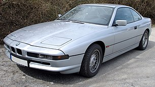

8 series e31

BMW E31 — Gran Turismo из 8-й серии автомобилей BMW, выпускавшееся с
1989 по 1999 год. Автомобиль пришёл на смену 6-й серии в кузове E24 (но
не является прямым потомком «шестёрки»). Машина должна была составить
конкуренцию моделям SL и купе S-класса от Mercedes-Benz. Автомобили 8-й
серии стоили гораздо дороже и имели лучшие показатели. Купе было
рассчитано на 4 пассажиров (2+2), в отличие от Mercedes-Benz SL, который
был родстером. Стоимость новой машины была около 100 000 долларов.